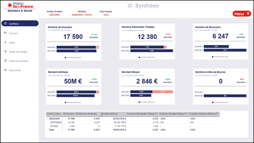
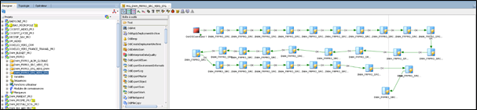

L'intégration de l'intelligence artificielle générative dans les médias numériques dévalorise-t-elle la perception du contenu journalistique aux yeux des lecteurs ?
Joris Salmon
Sous la direction de Alaric Tabariès
Date de soutenance : 27 juin 2025
Contexte : La Tension Constitutive de l'IA dans les Médias
Depuis fin 2022, l'IA générative a explosé, créant un décalage entre la maturité de la technologie et la maturité de la réflexion stratégique et éthique dans les rédactions.
Mon mémoire analyse ce que j'appelle une tension constitutive, un nœud gordien où quatre pôles sont inextricablement liés.
Ma problématique s'inscrit au cœur de cette tension : comment cette intégration technologique impacte-t-elle la valeur perçue du journalisme ?
Innovation Technique
Puissance et accessibilité sans précédent des outils (LLM).
Mutation Professionnelle
Transformation du rôle et des compétences du journaliste.
Réception Publique
Confiance, interprétation et perception par les lecteurs.
Défis Éthiques
Désinformation, biais, responsabilité éditoriale.
Cadre Théorique : Les Fondations Conceptuelles
Bourdieu / Cardon
Champ Journalistique & Machines Inductives
L'IA perturbe le "champ journalistique" en introduisant un nouveau capital technologique qui concurrence le capital symbolique traditionnel (réputation, sources). Les LLM, en tant que "machines inductives", apprennent par reconnaissance de motifs, expliquant leur puissance et leurs "hallucinations".
Un article généré par IA peut-il acquérir une légitimité dans ce champ ?
Eliseo Verón
Contrat de Lecture
Le "contrat de lecture" est le pacte implicite entre un média et son public. L'IA modifie radicalement ce pacte : le lecteur attend non seulement une information, mais une garantie sur la manière dont elle a été produite et validée.
L'arrivée de l'IA force une renégociation de ce pacte de confiance.
Cadre Théorique : Les Observateurs du Présent
Ce socle théorique a été complété par les analyses d'observatoires et de chercheurs en première ligne sur l'IA et le journalisme.
Observatoires & Think Tanks
Des acteurs comme JournalismAI (dirigé par C. Beckett) ou le Reuters Institute fournissent des données mondiales indispensables.
Rapport 2025 :
87% des rédactions sont déjà transformées par l'IAG.
Ces rapports quantifient l'ampleur du phénomène et soulignent les craintes, comme l'émergence d'« AI slop » (contenu de faible qualité).
Chercheurs Spécialisés
Des chercheurs comme Nicholas Diakopoulos sont fondamentaux pour penser les solutions.
Concept clé :
Responsabilisation Algorithmique
Ses travaux explorent les moyens de rendre les systèmes d'IA plus transparents et vérifiables, un enjeu au cœur de mon enquête de terrain.
Méthodologie & Hypothèses
Approche Mixte
Pour confronter les pratiques des rédactions à la perception du public, j'ai adopté une méthodologie mixte :
Volet Qualitatif
Entretien semi-directif avec une data-journaliste de Ouest-France pour comprendre les pratiques internes.
Volet Quantitatif
Questionnaire en ligne (N=150) pour mesurer la perception, les attentes et le niveau de confiance du public.
5 Hypothèses à Tester
- H1:L'IA redéfinit les rôles journalistiques vers des tâches de supervision et de vérification.
- H2:Le public a une perception paradoxale : contenus jugés plus clairs, mais moins crédibles.
- H3:L'autorité des médias se déplace de la production vers la validation de l'information.
- H4:La transparence sur l'usage de l'IA est un facteur déterminant de la confiance du public.
- H5:Les journalistes vivent une tension éthique entre gains d'efficacité et risques pour la qualité.
Résultats : Le Verdict Ambivalent du Public
L'enquête auprès du public révèle une perception profondément ambivalente, validant plusieurs hypothèses.
Le Paradoxe (H2)
L'IA est perçue comme un avantage sur la forme, mais une menace sur le fond.
+32,1% pour la clarté
-71,4% pour l'originalité
-58,3% pour l'exactitude
La Confiance (H4)
La confiance est conditionnelle et repose sur un levier principal : la transparence.
54,1%
ont a priori moins confiance en un média utilisant l'IA.
95%
exigent la transparence sur son usage.
L'Authenticité (H3)
L'acceptation de l'IA s'effondre à mesure que le contenu requiert du jugement humain.
Brèves factuelles : 86,7%
Reportage d'enquête : 16,0%
Résultats : La Prudence Stratégique de
Ouest-France
L'étude de cas confirme les hypothèses H1 et H5. Loin d'une adoption euphorique, le journal a mis en place une véritable stratégie de prudence.
"On sent quand un texte est écrit par une IA... Souvent, les propositions sont assez mauvaises et demandent une réécriture." Nolwenn Chapellon — Data-journaliste, Ouest-France
Prudence
Contenue à des tâches techniques, supervision humaine totale.
Supervision
Le rôle du journaliste évolue vers la vérification (H1).
Gouvernance
Charte interne stricte pour protéger données et lecteur (H5).
Conclusion du Mémoire :
Du Contrat de Lecture au Contrat de Certification
Loin de dévaloriser le journalisme, l'IA agit comme un révélateur. Elle le pousse à se recentrer sur sa valeur unique. L'autorité du média ne repose plus seulement sur sa capacité à produire, mais à valider.
Contrat de Lecture
(Passé)
Contrat de Certification
(Futur)
Les 3 Piliers du Nouveau Contrat
Transparence
Informer sur l'usage de l'IA.
Supervision Humaine
Garantir la validation éditoriale.
Éducation
Former les journalistes et le public.

Partie 2 : Le Stage
Consultant BI Junior
chez Micropole
Accompagner un client majeur sur l'ensemble du cycle de vie de ses projets décisionnels, de l'extraction des données jusqu'à leur visualisation.
Missions et Projets Clés
Dashboarding Power BI
Création de bout-en-bout d'une application de suivi des bourses Sanitaire et Social : du recueil du besoin au développement final.
Flux ETL & Modélisation
Refonte de l'application sur l'insertion professionnelle : reprise complète des flux de traitement avec Oracle Data Integrator (ODI) et optimisation du modèle de données.
Proof of Concept (POC) IA
Développement d'un POC utilisant des LLM pour générer automatiquement de la documentation technique afin de simplifier la compréhension de schémas de données complexes.
Apports et Compétences du Stage
Ce stage a été extrêmement formateur en me permettant de confronter la théorie à la pratique : un modèle de données parfait sur le papier doit avant tout répondre à une contrainte métier et de performance.
Compétences Techniques
- Maîtrise de Power BI et du langage DAX.
- Développement de flux ETL avec Oracle Data Integrator (ODI).
- Optimisation de requêtes SQL sur des bases Oracle.
- Conception de modèles de données en étoile.
Compétences Méthodologiques
- Gestion de projet de A à Z (recueil de besoin, spécifications, développement, recette).
- Interaction et communication avec le client.
- Participation à la dimension commerciale.
- Chiffrage des charges de développement et aide à la rédaction de devis.
Conclusion : La Chaîne de la Confiance
Ces deux expériences, recherche académique et stage en entreprise, convergent vers une même idée centrale : la confiance ne se décrète pas, elle se construit.
Data Fiable
Processus Transparent & Validé
Produit de Confiance
(Article / Dashboard)
Que l'on soit un lecteur face à un article ou un décideur face à un tableau de bord, l'exigence est la même. Mon projet professionnel est de continuer à évoluer à cette intersection, en construisant des solutions data qui soient non seulement performantes, mais aussi et surtout, dignes de confiance.